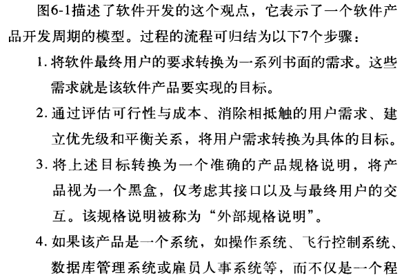

软件测试
这几篇没做什么很大的修改，基本上按照上面给的重点而开始的
Validation & Verification
验证(verification)和确认(validation)
验证指保证软件正确的实现了某一特定功能的一系列活动； 我们的产品做得对吗? Are we building the product right
确认指的是保证软件的实现满足了用户需求的一系列活动； 我们在做正确的产品吗? Are we building the right product
Psychological & Economical Factors
page 4-7
软件测试原则


心理学上的因素 Psychological
Testing is the process of executing a program with the intent of finding errors
测试是为发现错误而执行程序的过程
测试提高了程序的可靠性和质量
人总是会倾向于选择可能较少导致程序出错的测试数据
成功的测试指 这个测试是有效的 找出的错误可修复 或无错误
而不成功是指没能适当地对程序进行检查。
有时未能找出错误的测试就是不成功的测试
经济学上的因素 Economical
软测不可能找出一个程序中全部的问题 即使是很小的程序
一般而言测试用例的数量和发现问题的数量成正比
这样就反映（暗示）出软测的经济学上的挑战
而应对这个挑战 则有两种测试方法：黑盒和白盒
Black-box & White-box Testing
page7-10
测试用例part

由于时间和成本的约束，关键问题是：
在所有可能的测试用例中，哪个子集最有可能发现最多的错误
效率最低的是随机输入测试，也就是在所有可能的输入值中随机选择某个子集对程序进行测试的过程
推荐是使用黑盒测试方法来设计测试用例，然后视情况需要使用白盒测试方法来设计补充的测试用例
Black-box
是数据驱动(data-driven)的测试或者说是输入/输出驱动的测试
将程序视为一个黑盒子
测试目标与程序的内部机制和机构无关，将重点放在发现程序不按其规范正确运行的环境条件
测试数据完全来自软件规范 也就是不需要了解程序内部结构
使用这个测试方法来发现全部错误，则判断的标准就是’’穷举输入测试’’将一切有可能的输入**(不是有效)**都测试一遍
如果有数据库的话就更麻烦了 还要测试所有可能的事务顺序
从经济学上而言，穷举测试不大可能，测试投入的目标在于通过优先的测试用例，最大限度地提高找到问题的数量，因此还需要知道软件内部的内容
测试用例BB
基于程序规划说明书的黑盒测试的目标是找到程序不符合规格说明书的地方
- 等价划分
前面提到穷举输入测试的时候，我们想要找到测试用例的其中一个子集，这个子集正确且可以找到最多错误
首先要控制测试用例的增加，然后还有尽可能覆盖大多数其他可能的测试用例
每个测试用例必须尽可能多的体现不同的输入情况，最大限度的减少测试所需要的数量。
尽量将程序的输入范围进行划分，将他们分拆成有限数量的等价类
意思就是测试每个等价类的代表性数据就等同于测试该类其他的任何数据
两个步骤：*确定等价类* 生成测试用例
- 确定等价类
选取一个输入条件（规格说明的一个句子或者一个短语）外部条件
有效等价类表示程序的有效输入 而无效等价类是其他任何可能的输入条件也就是不正确的输入值
你要是发现程序并未等同地处理等价类中的元素，那么就把这个等价类再分成小一些的等价类
例子如上
- 生成测试用例
执行步骤

为啥要针对无效等价类，让他一个用例覆盖一个无效等价类呢

边界值分析
相比没有使用这个的测试用例，使用了可以有更高的测试回报率
上面那些等价类就是边界条件
那么久设定几个测试用例在边界值内（一点点） 刚好压线 和刚好超线（一点点）
和前者的不同

不仅要在输入的方面考虑，输出也要考虑到


二者相比，边界值分析考察正处于等价划分边界或在边界附近的状态
因果图（不考）
错误猜测
就是靠“猜” 很难归纳
依赖直觉的非正规过程
测试策略


White-box
是逻辑驱动(logic-driven)的测试，允许我们查看程序内部结构，对程序逻辑结构进行检查，而从中获取测试数据 （常常忽略程序的规范）
将程序中的每条语句至少执行一次 人称：穷举路径测试(exhaustive path testing)
意思就是如果测试用例执行了程序中所有可能的控制流路径，那么程序可能得到了完全测试，而这样就太多测试用例了 即使这样仍然程序可能会出现错误原因如下
- 穷举路径测试不能保证程序符合其设计规范

- 程序可能会因为缺少某些路径而存在问题 而这个方法不能找出缺少了哪些必须路径
- 这个方法不一定会暴露出数据敏感错误

虽然穷举输入测试要比这个方法强一些，但都不是有效的方法
测试用例WB
逻辑覆盖测试
对于语句覆盖，也就是每个语句至少执行一次
每行都跑到，但是对于if语句中的”与“或者“或”,有些内容跑不到
比如说要是两个条件都是正确的，那么你写“与”和”或“的结果就是一样的，但是你这个测试并没有找出这个问题

要求程序中所有判断都至少覆盖一次，同时每一条语句或者入口点都被执行一次
以下都是逻辑覆盖的方法
- 语句覆盖
程序中的全部语句都跑过 每个语句至少执行一次
- 判定覆盖或分支覆盖
较强的逻辑覆盖准则
比语句覆盖更强一点
每个判断都至少有一个真和假的输出结果,也就是每条分支路径都要遍历一次
每个判定的所有可能结果至少出现一次
一般可以满足语句覆盖 但仍然有例外：

由于将语句覆盖视为一个必要条件，所以说我们希望判定覆盖或分支覆盖理应涵盖语句覆盖，也就是每个判断必须要有T和F，并且每条语句至少执行一次，每个入口点（包括ON单元）都必须至少被调用一次
- 条件覆盖
比判定覆盖更强一些
保证将一个判断中的每个条件的所有可能结果至少执行一次，补充上对程序或子程序，包括ON单元的每一个入口点都至少调用一次
和判定覆盖一样不一定每条语句都执行到 使得其中每个条件都有true false的结果
例子：

而对于判定覆盖则是每个判定都有true false的结果 而条件覆盖则会更细一点

虽说这个例子中条件和判断覆盖生成的测试用例数量是一样的
虽说条件覆盖要比判定覆盖要更强一些 但注意条件覆盖不一定涵盖了判断覆盖
例子：

对于上面这个例子，使用判定覆盖的话，会将循环从K=0执行到K=51就可以满足准则，没有考虑后面的while语句为假的情况，而条件的话就要考虑J+K<Quest产生一个为假的结果
A B一真一假虽然满足了条件覆盖 但是这整个与的结果仍然是false

这两个测试用例只包含了abe路径，四个判定结果的两个 （条件的话是FTFT, TFTF）(F,T)
为了解决上面的问题你二者都考虑就行了
所以采用判定/条件覆盖：每个条件的所有可能结果至少执行一次，将每个判断的所有可能结果至少执行一次，将每个入口点都至少调用一次
有时候还是不行 比如说逻辑与&&
当前面一个条件是错误时 后面的条件不会执行
- 多重条件覆盖
这个可以部分解决这个问题

要求是将每个判定中的所有可能的条件结果的组合，以及所有入口都至少执行一次
满足多重条件覆盖准则的测试用例集会同时满足 条件 判定 以及判定条件
Inspection, Walkthrough, Review (Desk checking; Peer rating)
page15 (28)
影响人工测试的原因
- 应用程序的大小和其的复杂度
- 开发团队的大小
- 应用开发的时间安排
- 程序开发团队的背景和文化
优势
让作者以外的人参与进来(相对于检查办公桌)
更精确地定位bug(相对于黑盒测试)
善于验证，能发现30-70%的逻辑设计和编码错误
缺点
不擅长验证或发现高级设计错误
只擅长发现某些类型的错误，作为基于计算机的测试的补充(例如，非初始变量vs除以零)
•Advantages
1.Involve people other than the author (vs desk-checking)
2.Locate bugs more precisely (vs black-box testing)
3.Good at verification, can find 30-70% logic design and coding errors
•Disadvantages
1.Bad at validation or finding high-level design errors
2.Only good at finding certain types of errors, complementary to computer-based testing (e.g. uninitiated variables vs division by zero)
Inspection & Walkthrough
都要求人们组成小组 一起开会找问题而不一定要解决
这是对过去桌面检查Desk checking的改进
30%-70%的逻辑设计和编码错误，不代表所有错误中多达70%可能会被找出来，而是这些方法在测试结束时可以有效地查找出多达70%的已知错误。因为错误的总数是始终未知的。
相比那些基于计算机的测试方法，人工方法比基于计算机的方法更加有效，在某些特定类型的错误
不让代码的作者来 让别人来
一旦发现错误可以精确定位 降低调式(错误修改)的成本 且能成批发现错误
但是不能有效地查找出高层次的设计错误 比如说在软件需求分析阶段的错误
WalkThrough
也是以小组开展
人员：

有人会带测试用例来 然后测试用例在人脑中进行推演
程序的状态会被记录在纸上
把测试数据顺着程序的逻辑结构走一遍
数据用例需要少且简单
Inspection
代码检查多以组为单位阅读代码，是一系列规程和错误检查技术的集合。集中于规程和要填写的表格
相比walkthrough它没有测试用例
4人组成 1人发挥协调作用，这个人不是程序的编码人员 但了解程序的细节
职责：


并且代码的作者需要位列其中，一名该程序的非编码人员和一个测试人员
流程

改bug在检查会议后
常见错误:
- 数据引用错误
- 数据声明错误
- 运算错误
- 比较错误
- 控制流程错误
- 接口错误
- 输入输出错误
Desk checking桌面检查
大概就是自己对自己的程序推演一遍
一个人阅读程序，一个人对照错误列表检查程序，一个人对程序推演测试数据
这个一个人可以是别人，你可以和别人换程序进行桌面检查，但还是效果比较差
因为对于之前两个，它们是有小组，小组内部存在相互促进的效应
Peer rating同行评审
不是为了测试程序
这是为了

提供自我评价的手段
选一个人当评审过程的管理员，让他挑人，这些人选自己写的最能展现自己能力的程序和一个自己写的质量比较差的
然后打分按照下面的问题 再提出评价和改进的建议

结束后参与者会收到自己的两个程序的匿名评价表和一个带统计的总结
Integration Testing (Nonincremenatal; Incremental; Top-down;Bottom-up; Driver Module; Stub Module), Regression Testing
page 70 本章开始 page81 增量测试
模块测试
模块测试(module testing)是对程序中的单个子程序，子分支，子类，子过程进行测试的过程 而不是直接对一整个程序进行测试，而是一些小模块
目的是为了将模块的功能与定义模块的功能规格说明或接口规格说明进行比较
总体上**面向白盒**，要是对一个大一点的软件进行测试，比如说一个完整的程序，白盒测试不好展开，其次后续的测试过程着眼于发现其他类型的错误（也就是错误不一定与程序的逻辑有关了）
测试用例设计
需要模块规格说明和模块的源代码 规格说明规定了输入和输出参数以及模块的功能
使用一种或者多种白盒测试方法分析模块的逻辑结构，然后使用黑盒测试方法对照模块的规格说明以补充测试用例
增量测试与非增量测试 Integration Testing&Nonincremental
将模块组装成工作程序的方式
非增量或崩溃测试(big-bang)：先独立地测试每一个模块 然后再组装成完整的程序
增量或集成测试：将下一步要测试的模块组装到测试完成的模块集合中，再进行测试


一般而言增量测试会好一点
非增量测试
非增量：将6个玩意单独测试，将每一个模块看作一个独立实体，他们可以按次序或者同时进行测试，最后将他们组装或者集成为一个完整的程序
测试一个单独的模块需要一个驱动模块(driver module)和一个或者多个**桩模块**(stub module)
过程就是设计好测试用例后 将输入参数由驱动模块传递给模块B
驱动模块：人为编写的小模块（现在可以使用测试工具代替），将测试用例驱动或传输到被测模块中，并且还向测试人员展示模块测试结果
一般来讲我们的project里面就一个主函数入口，所以我们测试的模块不一定有这个入口（也就是让他直接运行的玩意），所以测试人员使用一个驱动模块让他单独运行
桩模块:用于代替外部系统、服务或对象，提供假设和预测的行为结果和异常反馈数据。通过对受控制和固定的程序输入产生预定输出，测试人员可以使用桩来检查单个系统结构组件是否按照预期工作。
桩模块用来模拟依赖模块的功能
正如5-7图所示，我们目前测试的模块B他需要模块E的支持，所以还需要一个额外的部件使得B调用E时接受B的控制指令，这就由桩模块来完成，模拟E的功能
增量测试
增量测试的方法有很多，有从程序顶部进行的也有从程序底部进行
将洗一个要测试的模块组装到前面已经测试过的模块集合中去
先从程序底部开始
首先测试ECF模块 他们都是每个分支中最底层的那个模块，他们的测试可以是并行也可以是串行，因为是测试这三个模块，所以要编写3个驱动模块，然后去测试BD模块，此时要把BE结合，DF结合到一起进行测试，再次编写2个驱动模块，然后持续这个过程直到测试完模块A
相比非增量和增量，非增量所需的工作量要多一些，一上面的这个当作例子
非增量需要5个驱动模块（最顶上的不用驱动）和5个桩模块（一个模块开发一个桩模块，最顶层的不需要桩模块），自底向上要5个驱动模块，自顶向下是5个桩模块
自顶向下测试和自底向上测试
这两种测试都是增量测试 自顶向下的测试 和 自顶向下的开发是同义词 而自顶向下的设计就和他们是两码事了
二者的比较：

自顶向下测试
从程序顶部进行或者从初始模块开始，开始后，挑选一个后续模块进行增量测试，这个挑选的方法不是定数，只要是后续模块的丛书模块（也就是调用它的模块）先通过了测试


首先测试A模块，所以需要编写BCD的桩模块， 有时候测试用例不能从程序顶部输入，比如说输入的数据是从一个或者多个桩模块提交过来的 比如说A的测试用例可以是模块B所传的，D模块可以将输入数据打印出来
如果模块A仅会调用一次模块B，那么要提交多个测试用例给A的话可以编写多个桩模块B，每次都是使用不同版本的桩模块B，或者将测试数据放在外部文件，然后使用桩模块B进行读取再传给模块A。
当模块A测试完了可以使用真的模块代替其中一个桩模块
如果可以并行测试则可以一个程序员测试AB 另外一个测试AC 还有一个测试AD
测试的顺序也是不为1的
以下就是可采纳的顺序

如果有别的需求之类的那就另外说，当然也有推荐的一些建议：

对于第二个建议是因为桩模块不只是要作为输入测试数据的方法，同时也要将输入打印或者说显现出来，如果早点把这些I/O的模块加进来那么就可以再桩模块中少写输出测试用例结果的代码
然而自顶向下测试是有缺点的

比如说此时我们需要使用模块H代替桩模块H，但是测试用例输入是从J出发的，中间隔了那么多步，我们很难知道数据到H时是多少，并且也很难控制到H时的数据。
另一方面我们需要了解测试的模块H的输出结果，但是输出的模块是I，如果我们需要根据I的输出推算出模块H的真实输出也是很难
再说了，你设计的时候是从上往下设计的，你在设计下面的同时上面已经开始写码了（写完开始测试了），那么未来你在设计下面的时候，提出的一些比较好的对上面的改进，可是上面都编好了码并且测试也完成了，那么这些理想的改进就只能放弃了
自底向上测试
自顶向下的缺点就是自底向上的优点，反之亦然。
一般从一些终端模块开始，也就是一个模块他不再调用别的模块，测试完后可以随意选择一个，当然也要满足要求，就是这个选择的模块他所调用的模块都已经测试过了
第一步是测试 EJGKLI中的部分或者全部，可串行也可并行。此时每一个模块都需要一个驱动模块其中包含有效的测试输入、并且显示出测试的输出。不同于桩模块，驱动模块可以自己交迭调用测试模块，所以不用像自顶向下那样开发多个模块，并且一般而言驱动模块更好开发
他的问题也很明显，直到测试完成之前，这些模块都是一些小碎片，他们都是不能工作的
回归测试Regression Testing
对程序或者功能进行改进修改后进行回归测试，目的是判断程序的改动是否引起了其他地方的退步
回归测试是指修改了源代码后，重新测试以确认修改有没有引入新的错误或导致其他代码产生错误
所以说你之前测试后的测试用例不应该丢掉，不然这里你又要重新设计测试用例了
System Testing; Function Testing; Installation Testing; Test Completion
page 93本章开始
错误定义：当程序无法实现其最终用户要求的合理功能时，就发生了一个软件错误
外部规格说明：将上面两层内容转换成一个准确的产品规格说明，将产品看作一个黑盒，仅考虑其接口以及与最终用户的交互

在其过程中为了防止出现错误，我们再每一步加上一个验证的过程

在此过程中会有测试（测试≠验证）

**模块测试**：是为了发现程序模块与其接口规格说明之间的不一致
**功能测试**：是为了证明程序未能符合其外部规格说明 Verif
**系统测试**：是为了证明软件产品与其初始目标不一致 Valid
功能测试 Function Testing
定义如上 是为了证明程序未能符合其外部规格说明
外部规格说明是从最终用户的角度对程序行为的精确描述
一般而言功能测试是一个黑盒操作 要依赖早期的模块测试的过程来实现理想的白盒覆盖准则
测试用例通过对规格说明进行分析而获取的，黑盒测试用例获取的那几个方法都适用于功能测试
意思就是不仅要测试是否有这个功能，而且还有测试这个功能做的符不符合我对它的水平要求
系统测试 System Testing
他和功能测试是不一样的，他是将系统或者程序与其初始目标进行比较。
相比功能测试，它更加模糊，他是更早进行的一项测试

并且还要注意在设计外部规格说明过程中所犯的转换错误，所以测试用例不能基于外部规格说明和目标文档来生成测试用例，因为不包含对程序外部接口的准确描述
所以会使用程序的用户文档或者书面材料，分析目标文档设计系统测试，分析用户文档来阐明测试用例

测试用例的分类

其中只讲安装测试
安装测试 Installation Testing
在上面图片有：确保能够在所有支持的平台上安装软件
与设计过程没关系
它不是为了发现软件中的错误，而是发现安装过程中出现的错误
安装时会有这些事件发生


测试结束准则 Test Completion
何时终止测试
最常见的准则是
- 安排的测试时间用完了
- 执行完所有的测试用例还未发现错误，就结束了，也就是测试用例都不成功
都是无效的
给第二条准则加上一些定语


但是这样仍然是有缺陷的
或者用确切的数量来描述结束测试的条件

设定最后需要找到错误的数量，到数量才算结束
这个数量需要是有意义的，所以需要做到这些

如何预测总数?
你可以测试一段时间，然后记录一下连续发现错误的间隔时间，然后把这些时间输入到一个公式的参数中。你可以自己在一个模块中写点错误（这些都是不公开的），这个叫种子错误，然后给别人测试，看看一段时间后发现的种子错误和非种子错误的比例。你也可以用行业内的平均值，像是编码结束时（做走查和检查之前），一般程序中的错误数量大致为每100行4-8个错误
你还可以靠现在的一些数据，比如，数据表明，在大型程序中，大约有40%的错误是编码和逻辑设计错误，剩下的错误则产生于早期的设计阶段
通过测试可以发现问题的百分比
估计源自特定设计过程的错误比例，以及在哪些测试阶段可能检测到这些错误。


第三种方法就是需要我们在测试过程中记录每单位时间内发现的错误数量，然后通过检查统计曲线的形状，决定是要继续该阶段的测试，还是结束它开始下一测试阶段


图一的话你就不能在第7周停下来因为现在是高峰，所以你现在要做的就是继续测试，你可以增加一些测试用例 如果是图二你就差不多可以结束功能测试开始系统测试了，当然也要考虑下降的原因，比如说测试用例用完了，或者缺少使用电脑的时间
最好的方法就是三者结合
模块测试的话，用第一个讲的方法就行（添加定语的那个）
Usability Testing (User Recall; Hallway Testing; Think-Aloud Protocol; Remote User Testing; Eye-tracking; Number of Users; Questionnaire)
page116 本章开始
可用性(用户体验)测试
在人的因素上研究和分析，是一个基于用户的软件测试,衡量有用性和易用性
首先先是可用性测试的基本要素

….
可用性或者说基于用户的测试基本上基于黑盒测试，不关心软件内部如何运作以及软甲内部设计结构。从功能缺陷到不符合人机工程学的设计失误来揭示软件设计存在的问题
测试用户的选择
完整的可用性测试草案需要同一组用户完成多个测试以及不同组用户完成多个测试
关注点是用户记忆
你的软件要是是针对于某一特定群体的话，你就要找一些专家进行测试了，他们要有一些这一类软件的实际使用经验
用户记忆User Recall
测试用户在多次使用后再使用是否需要长时间去学习使用方法，下一次使用的时候用户还会不会了，会多少。看用户的学习成本
需要多少用户进行测试 Number of User
当然人数越多，发现的问题也就越多
考虑到成本就不行了
基于一个公式，我们可以知道不需要那么多的人
这个地方使用L=31% ，5个就能到达83%


数据采集方法
管理者和观察者可以通过很多方法获取数据
发声思考 thinking-aloud
用户在执行测试的过程中表达出他们的想法和对软件的评价，测试参与者可以描述他们的任务，并说出自己对任务的理解和执行测试时其他任何想法
开发者也可以事后找他们问问，前后两次的数据就可以提供非常有价值的反馈
但是这是有缺点的：
因为这个过程是全程录像并且当场有观察员接入，所以测试人员很难割舍这个“不自然”的环境因素而产生偏差。
远程用户测试Remote User Testing
可以用第三方软件来记录每个击键和每个测试任务所花的时间
有一种解决方法就是把软件安装到用户的机子里去，这样就可以切割掉这个不自然的因素，但是就不能得到前者那种准确的反馈
长廊测试或长廊拦截测试Hallway testing
意思就是随机选择测试用户，就像从长廊随便抓一把人一样
眼球追踪eye tracking
数据是有关于观察者的目光在某个视觉元素上驻留的时间长短，反映观察者的思考程度
这样可以知道最能吸引实验参与者的视觉元素、或者说按照什么顺序以及吸引时间的长短
用这样的数据开发者可以选择最有效的外观
可用性调查问卷Usability Questionnair
一些问卷的样例

可以把问题反过来问，用来测试用户是否明白问题的意思
Debugging (Induction; Deduction; Backtracking;Testing)
调试Debugging
page127 本章开始
调试为啥没人喜欢捏，原因如下：

调试有两个步骤：错误定位和错误修改
暴力法调试
最不需要动脑子的方法，但也是效率最低的方法
3种类型

为啥低效的原因也不提了
归纳法调试Induction
认真思考一般肯定能解决问题，归纳就是其中一种，从细节到全局
步骤如下
1.确定相关数据
将所有可用数据或者症状考虑进去
列举出所有知道的程序执行的正确与不正确的地方
2.组织数据
按照表格所示去归纳数据

3.作出假设
错误的原因是啥，如果无法作出假设，那么就需要更多的数据，若有多个假设，那么选择最有可能的那个
4.证明假设
将假设与最初的线索或者数据相比较，确定假设可以完全解释他们
5.解决问题（还要回归测试）
演绎法Deduction
从普遍理论或前提出发，再排除和精炼，达到错误的位置
1.列举出所有可能的原因或者假设
2.使用数据排除可能的原因
要是所有原因都排了，那就增加数据用来增加新的假设，要是原因多了，那就选一个最有可能的。
3.提炼剩下的假设
原因可能正确，但可能不具体无法指出错误
4.证明剩下的假设
5.修复问题
回溯法调试Backtracking
定位错误时可以沿着程序逻辑结构回溯不正确的结果，知道找到程序逻辑出错的地方
保持想法，如果程序在这里是这样的，那么程序在上面位置的状态就必然是这样的
从程序错误的地方开始逆向执行程序
测试法调试Testing
“思维型”调试方法，使用测试用例来调试
测试用例分两种：一种是测试的测试用例，还有一种是调试的测试用例，目的是提供有用信息，供定位某个被怀疑的错误使用，用于调试的测试用例比较小，只需要覆盖一个或几个条件
可以和归纳，演绎法一起使用
Agile & Extreme Programming
page142本章开始
敏捷开发下的测试
敏捷开发 Agile
轻量化，快速的开发方法
提倡迭代式和增量式开发，强调测试的重要
以用户为中心，客户需求为导向
价值观：

敏捷开发是有很多方法的，没有一个单一固定的。但是他们都有三个共同点：
依赖客户的参与、测试驱动以及紧凑的迭代开发周期
几种开发方法：

敏捷测试
需要每个人的参与，需要大量沟通以及协作工作，需要客户尽早参与到开发周期中
开发者从创建单元测试开始，这是失败验证测试，从破坏的角度设计测试用例。


一般使用自动化测试
测试人员不仅仅需要帮助开发者修复bug，而且还需要改变需求设计和其他一般性质量提升
极限编程
不仅需要客户参与，而且高度依赖模块的单元以及单元测试
先创建单元（模块）测试和验收测试，再开始创建代码库
XP的关注点：


Three-tier model
page155 本章开始
互联网应用
这些一般都是C/S模式，有些是B2C有些是B2B
三层结构

第一层，运行web网站，也就是”表示层“，因为该层将可视化了的内容提供给最终的用户 互联网应用的外观和感觉都来自这一层。GUI
第二层，运行应用服务器，“业务层”，运行的软件模拟业务流程。功能有：
- 事务处理
- 用户身份确定
- 数据确认
- 程序日志
第三层的核心是从数据源，一般是关系数据库管理系统中存储和获取数据，也就是“数据层”，与第二层进行通信的数据库设备。获取的数据可以从端用户来
测试

一些测试这三层的例子

表示层测试
包括web站点的人机界面元素，要在会直接影响用户体验的特性中检查错误，还要确定信息的准确性，可以设计单元测试取查找页面中的结构问题，验证链接没错，文件没丢失
可以使用白盒测试
- 内容测试 content testing
包括整体审美、字体、色彩、拼写、内容准确性和默认值
2.Web站点结构 Website architecture
包括无效的链接或者图形
3.用户环境 User environment
包括web浏览器版本和操作系统配置
业务层测试
对于第三方组件，最好使用黑盒测试技术为主要方法 内部开发的话使用白盒
三种特性可测试:

- 性能测试
性能不好的系统会使得用户怀疑其的鲁棒性，用户可能不会再次使用了，比如说界面加载缓慢，事务处理缓慢
保证性能规格说明需要完成，比如响应时间或者吞吐量
通常使用强度测试，就是给予大量的请求，检查系统是否可以接受，还可以检查顺便检查一下网络设施的鲁棒性和可测量性
- 数据验证
确保从用户那里收集来的数据是有效的。和测试单机系统时查找用户输入或者参数的错误类似，通过测试发现数据采集时的错误
- 事务测试
可视作业务层的系统测试，需要具备书面文档（也就是客户需求），详细定义事务的构成

数据层测试
- 响应时间：需要量化结构化查询语言SQL语句的消耗时间
确保网站能够即使响应用户请求和操作,响应时间不包括页面载入的时间，重点放在没有满足性能指标的数据库操作上，以防止有的数据库操作会阻塞其他操作。注意测试的仅仅是一项操作的响应时间，一般使用黑盒
- 数据完整性：验证数据储存适当而且正确
与业务层的数据确认不同，业务层的是为了发下数据收集中的错误，而数据层则是发现存储中的错误，数据类型和长度可能会影响数据阶段和精确性
并且我们还要保证数据的同步更新，保持其最新
也就是数据信息准确且最新
- 容错性和可恢复性：最大化MTBF(平均故障间隔)，最小化MTTR(平均故障恢复)
测试数据库系统的容错性和可恢复性
MTBF取决于数据库的容错级别

可恢复性测试的目标就是设计出数据库无法恢复的场景出来，有时数据库崩溃，我们需要让它迅速恢复，开始于有效的备份，容错性好的往往是分布式的，一个坏了用另外一个备份的数据库